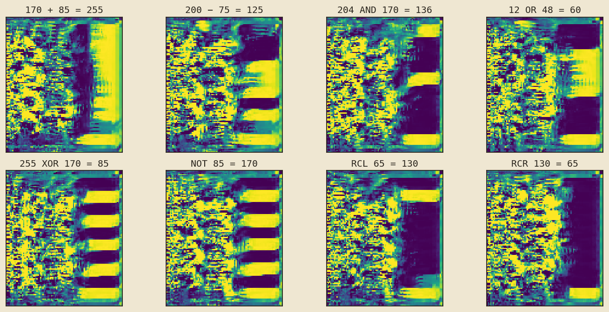

Self-organized boolean computation
Neural cellular automata are usually trained to grow and repair shapes13; this one computes. A single learned update rule, applied locally over many steps, self-organises the answer from spatially encoded inputs. Set the bits below and watch it compute Boolean logic and binary addition.
Task
Input bits
Grid output
The task
A cellular automaton is a grid of cells, like Conway's Game of Life10: every cell holds a few numbers and is updated by the same rule, which only looks at the cell and its neighbours. In a neural cellular automaton the rule is a small neural network trained by gradient descent1 instead of written by hand. Such rules have grown shapes1, synthesised textures3, built functional 3D machines4, classified digits2, and solved graph problems5.
We give the model a task by drawing it on the grid. The input bits are placed as circles along the left edge: a bright circle for 1, a dark circle for 0. We want the answer to appear as circles on the right edge. The model is only trained on whether the final grid matches the target — it is never told where the input or output is, or which function to compute. For an answer to appear on the right, information has to travel across the grid over many steps — much as living tissue routes positional information8 and turns local chemistry into global pattern9. Specifying a task this way, as a picture, is a different route to computation than wiring logic gates into the cells directly6 or building toward universal automata7.
The rule is small. Each cell views its 5×5 or 7×7 neighbourhood through three fixed filters — its own value, and the horizontal and vertical Sobel gradients — then feeds those through a small two-layer network (about 8,000 weights) that updates its numbers. The same rule runs on every cell for a few dozen steps, and then we read the grid.
The update rule
The design follows the Growing Neural Cellular Automata of Mordvintsev et al.1 — a fixed perception step, a small learned update network, and stochastic per-cell updates. One step does the same thing in every cell:
Perceive
The cell looks at its neighbourhood through three fixed filters: the cell itself, and the horizontal and vertical Sobel gradients. Across the 16 channels this produces 48 numbers.
Apply the network
The 48 numbers go through the trained network (48 → 128 → 16, with a ReLU in between). This is the only part that is learned, and it is the same in every cell.
Update
The 16 outputs are added to the cell's numbers. One channel is kept read-only and always holds the original input, so the model can still see the question after many steps.
Fire and clamp
Only a random fraction of cells update on each step, so the rule cannot depend on a global clock. The numbers are clamped to a fixed range. We repeat this and read the grid.
Addition
Addition is not a local operation. The highest bit of 127 + 1 depends on a carry that starts at the lowest bit and passes through every bit above it. A rule that only sees a small neighbourhood cannot compute this in one step; the carry has to move across the grid over time. The images below show the visible channel of the 8-bit adder while it computes 127 + 1.

You can run this in Fig. 1 by choosing ADD 4-BIT or ADD 8-BIT. Both adders gave the correct sum on every random test we tried.
Results
AND, OR, XOR, NAND, NOR, XNOR, majority-of-3, and a two-output half-adder — each learned to full bit-accuracy on a 48×48 grid.
16 input bits, 9 output bits, and a carry chain of length eight, both operands.
One two-layer network, used by every cell on every step.
Some gates are harder than others
Gates that a single threshold can separate — AND, OR, NAND, NOR — are learned quickly. XOR and XNOR are harder, because the output depends on whether the two inputs disagree. In our benchmark, OR reached full accuracy after tens to hundreds of training steps, while XOR sometimes took several thousand.
Three settings that have to be right
Three choices had to be set correctly for the model to learn at all. The table shows XOR (best seed of each setting).
| Setting | Value | Valid bits | Result |
|---|---|---|---|
| Window size | 3×3 | 0.50–0.63 | does not learn |
| Window size | 5×5 | 1.00 | learns |
| Window size | 7×7 | 1.00 | learns (best) |
| Alive masking | on | 0.50–0.63 | does not learn |
| Alive masking | off | 1.00 | learns |
| Weight init | zeros | 0.50–0.63 | does not learn |
| Weight init | non-zero | 1.00 | learns |
A 3×3 window is too small for a signal to cross the grid in the number of steps we run. Alive masking is a technique from image-growing automata that stops updates in empty regions; here the empty background is used for computation, so masking it prevents learning. A rule whose weights start at zero produces no gradient, so training never starts.
It works on longer inputs than it was trained on
Because the rule is local and the bits are aligned to a fixed edge, an adder trained on short sums also works on longer ones. Trained on sums of up to 4 bits, it adds 8-bit numbers with more than 99% of bits correct.
| Trained up to | 4-bit | 6-bit | 8-bit |
|---|---|---|---|
| 2-bit sums | 95.3 | 93.7 | 90.5 |
| 3-bit sums | 99.8 | 98.4 | 98.1 |
| 4-bit sums | 99.9 | 99.9 | 99.7 |
| 6-bit sums | 100.0 | 100.0 | 99.8 |
An eight-operation ALU
Pushed further, one rule can drive a small arithmetic–logic unit. On a 96×112 grid we encode two 8-bit operands and a control column — a 3-bit opcode, a carry-in, and a 3-bit condition code — and ask a single NCA to produce the 8-bit result, a carry-out, and a branch flag. Trained across all eight operations, the model gets the result byte right about 99.7% of the time; the two flag outputs are weaker, so we treat this as one promising run rather than a solved task (see below). The panels show its settled grid for one example of each operation — operands and control on the left, the answer read from the column on the right.

Limitations
This is a research prototype, and there are clear limits.
A full ALU is hard. We tried to train a single model to do eight operations (add, subtract, the bitwise gates, shifts and rotates), chosen by an opcode, and to also output a carry and a conditional branch. One run reached a loss near 0.10 after about 900,000 steps: the result was correct about 99.7% of the time, but the carry-out (78%) and branch (86%) outputs were still improving slowly. This is one working run, not a solved task.
The outputs are soft. The target is a grey-scale grid and we read it by thresholding brightness, so a model that gets every bit right still has a mean-squared error of about 0.2–0.4. We report bit accuracy, not loss.
The model is stochastic. Because only some cells update each step, the grid keeps changing slightly, and a bit near the threshold can flip before it settles. Fig. 1 averages the output over the last steps, which helps. XOR and XNOR are the cases where you are most likely to see a wrong bit.
References
- Mordvintsev, A., Randazzo, E., Niklasson, E., & Levin, M. (2020). Growing Neural Cellular Automata. Distill. The perception + learned-update-rule + stochastic-update architecture this work builds on.
- Randazzo, E., Mordvintsev, A., Niklasson, E., Levin, M., & Greydanus, S. (2020). Self-classifying MNIST Digits. Distill.
- Niklasson, E., Mordvintsev, A., Randazzo, E., & Levin, M. (2021). Self-Organising Textures. Distill.
- Sudhakaran, S., Glanois, C., Najarro, E., et al. (2021). Growing 3D Artefacts and Functional Machines with Neural Cellular Automata. Proc. ALIFE.
- Grattarola, D., Livi, L., & Alippi, C. (2021). Learning Graph Cellular Automata. NeurIPS.
- Miotti, P., Niklasson, E., Randazzo, E., & Mordvintsev, A. (2025). Differentiable Logic Cellular Automata. Proc. ALIFE.
- Béna, G., & Faldor, M. (2025). A Path to Universal Neural Cellular Automata. Proc. ALIFE.
- Wolpert, L. (1969). Positional Information and the Spatial Pattern of Cellular Differentiation. J. Theoretical Biology.
- Turing, A. M. (1952). The Chemical Basis of Morphogenesis. Phil. Trans. R. Soc. B.
- Gardner, M. (1970). The Fantastic Combinations of John Conway's New Solitaire Game "Life". Scientific American.